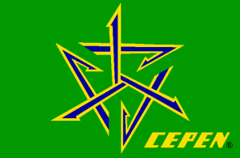

...ao
vento
Vale
mais do que qualquer coisa,
o
nome, a cara, a imagem,
enfim,
a aura que compõe um organismo ou uma organização.
Se
o CEPEN tem uma cara física, esta cara é sua bandeira.
Tal
como um filho que herda genes dos pais,
o
CEPEN recebeu cores do país donde nasceu.
Síntese
maior de sua existência. Estampa a que veio.
Retratando
a grande lei universal da natureza, a sua tendência ao equilíbrio,
um
triângulo de ponta-cabeça, América Neotropical,
inserido
no pavilhão verde da vida, palco dos acontecimentos orgânicos.
O
triângulo de flechas em ação,
busca
o equilíbrio colhendo e lançando de e para todos os lados.
Este
é o momento do CEPEN, seu resumo melhor,
dividido
em duas fases:
colher
e enviar recursos, colher e disseminar conhecimentos.
Elo
de ligação entre essências paralelas de impossível
dissociação.
Um,
Homo sapiens “oeconomicus”, amarelo-ouro das flechas,
provendo,
abrigando e abrindo passagem ao outro, o
Homo
sapiens “scientificus”, azul das flechas,
cerne
frágil e forte, que aponta àquele o caminho a seguir.
Um
ajudando o outro.
Ambos,
produtos da espécie ora dominante, animal de talentos brilhantes,
expoentes
cerebrais preparados e forjados na evolução à duras
penas,
mas
transpirando ânimo, graça e garra.
Ciente,
cientista e cientificador:
corpo
animal, cérebro capaz de sonhar, conceber e realizar,
aprender,
ensinar e amar.
Este,
para o CEPEN, é o retrato do Homem,
sem
antropocentrismos, a espécie mais fantástica já conhecida.
Produzir
recursos e conhecimento,
e
disseminar à todos os ventos.
Ciência,
Arte e Espírito,
razão
e emoção juntas em ação, pela busca dum mundo
melhor.
Este
é O CEPEN.
Assim
foi concebido,
assim
será mantido ... e ao vento.
...
e aqui vamos nós,
buscando
a felicidade no nosso barquinho chamado Terra,
navegando
à deriva no espaço cósmico...
.
-- Goimbê --
-
Local:
Santo Antônio do Planalto - RS - Brasil (amanhecer) Arquivo:
CEPEN / 56 / Marcelo De Negri Xavier
-